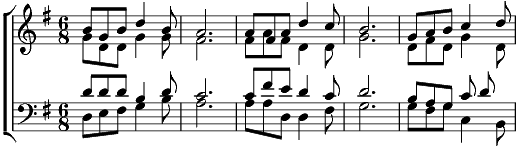

1. Jadis un chansonnier nous peignait la Venoge
Comme l'unique fleuve en territoire vaudois
Et pourtant nous sommes aux premières loges
Pour savoir qu'il se trompait ma foi
Bien sûr la Broye c'est évident
N'est pas vaudoise à cent pour cent
Puisqu'elle unit et sans façon
Vaud et Fribourg deux beaux cantons.
Refrain:
Gens de Moudon , gens de Lucens
Paysans de Granges ou de Marnand
Sans oublier tous les amis
Qui de Grandcour, qui de Missy.
Avec aussi les gens des villes
Payerne Avenches tous à la file
Venus de loin pour admirer
La broye tranquille qui va gonfler
De ses eaux calmes là tout en bas
Le si joli lac de Morat.
2. Quelques grands personnages figures historiques
Vécurent quelque temps dans ce vallon magique
Charles le Téméraire et puis la reine Berthe
Que tout le monde ne peut oublier
Et puis plus près, plus près de nous
Un aviateur des plus alertes
C'est Failloubaz c'est lui bien sûr
Que nous voulons ici nommer.
Coda:
Gens de Moudon, gens de Lucens
Paysans de Granges ou de Marnand
Sans oublier tous les amis
Qui de Grandcour, qui de Missy.
Avec aussi les gens des villes
Payerne Avenches tous à la file
Venus de loin pour admirer
Une rivière que Dieu envoie
Pour notre bien Merci la Broye.